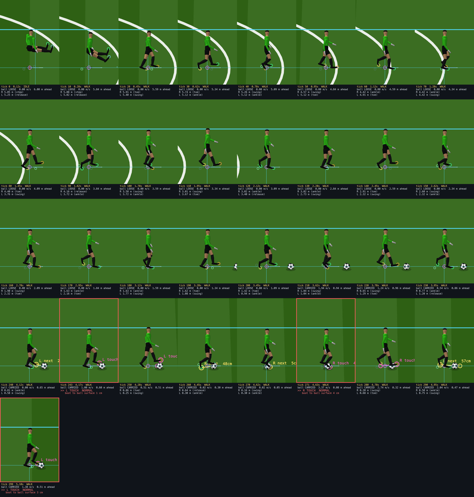
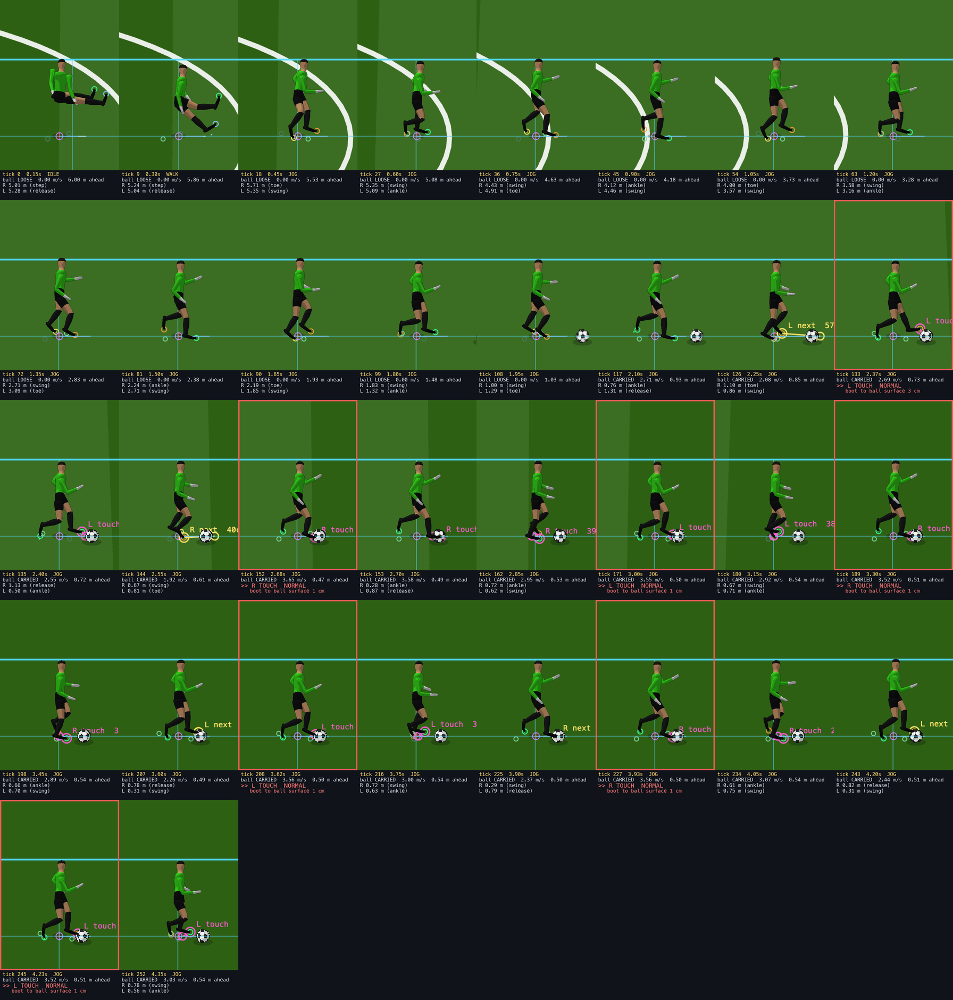
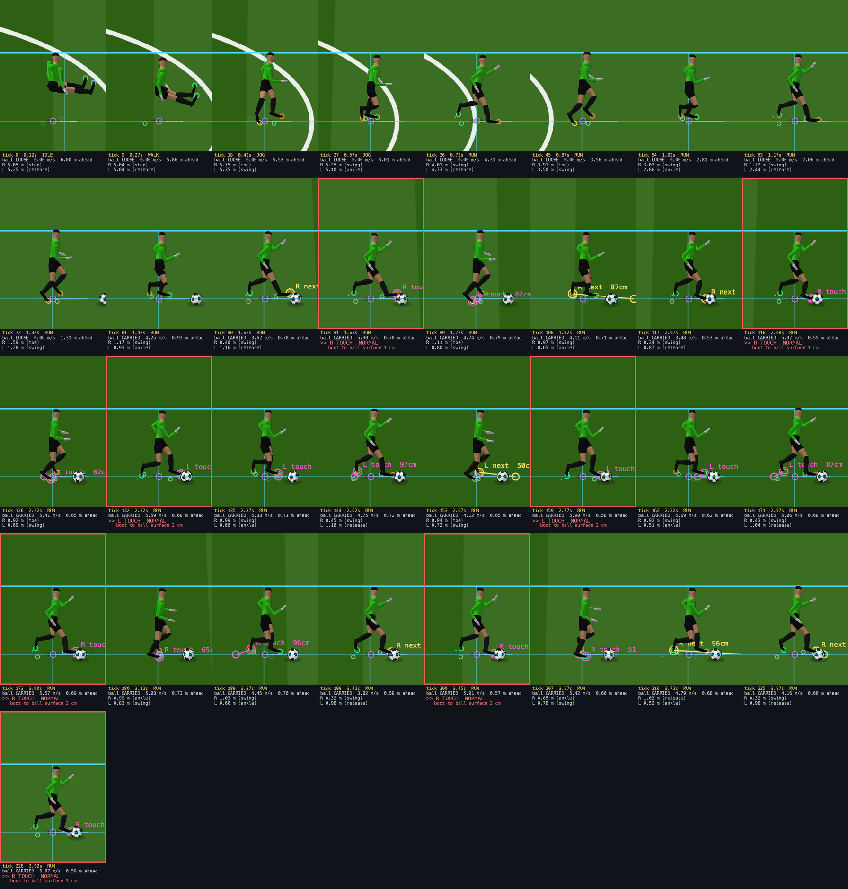
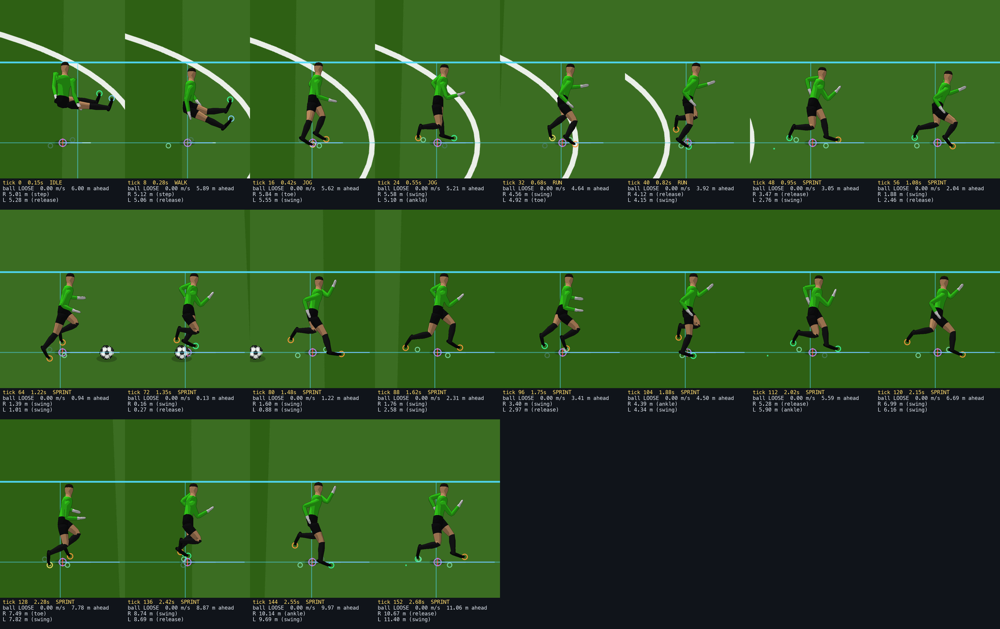
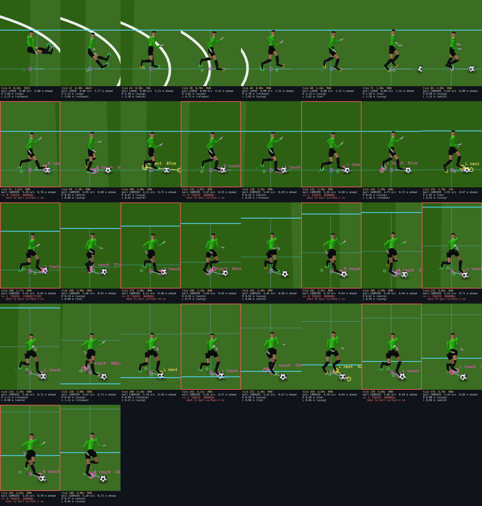
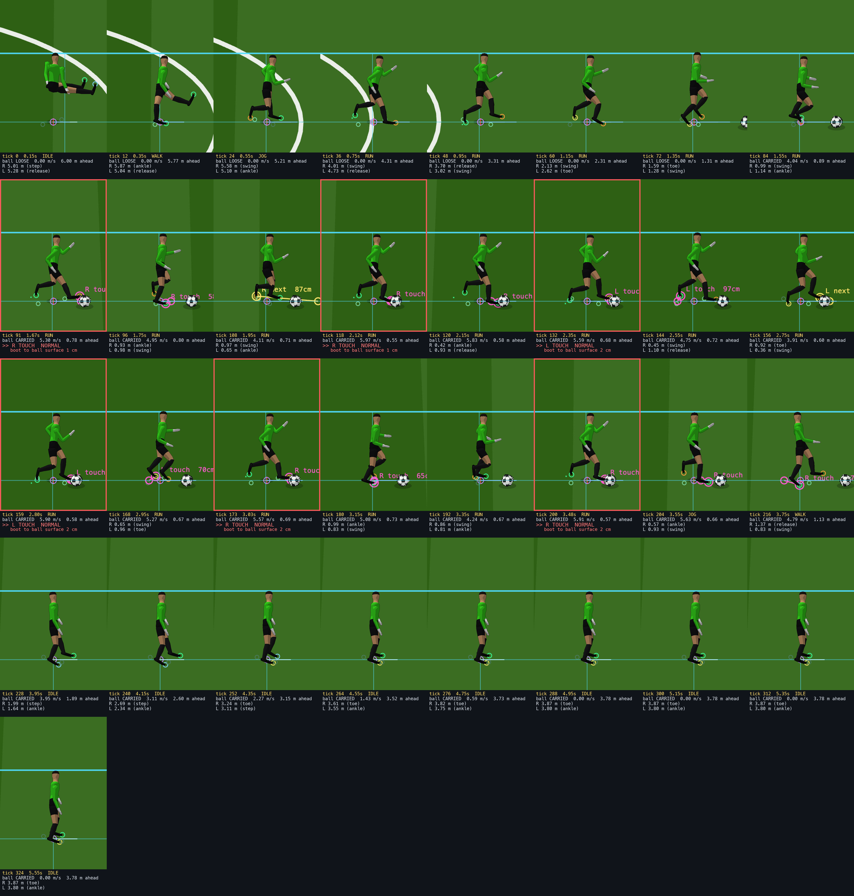

The authoritative carry law now touches the ball through a real foot. Ordinary open-field carrying only: no skill moves, no defenders.
What changed, and what did not. CONTROLLED_DRIBBLING_V1 still decides everything: possession, whether a touch is due,
the corridor, the impulse, the loss rules. What changed is that an authorised touch now waits, inside a bounded window, for a boot that can
actually reach the ball — and the chosen boot is then put on the ball by a small bounded correction. Both the timing and the foot are computed
from the simulation's own stride clock and boot plan, never from the renderer. Animation ON and OFF produce bit-identical authoritative
outcomes on every gear and path tested.
MoveWASD or arrows · hold Q walk · E jog · nothing = run · Shift sprint BallJ drops a loose ball 3 m ahead to run onto · K toggles the dribble markers Body1–6 · ViewX Mixed · G follow · V foot markers · H HUD PlaytestR reset · M pause · , slow motion · . step
With the markers on, a yellow ring is the contact point of the next scheduled touch and a magenta ring the one just made;
the line runs from the boot that must make it, labelled with the foot and its distance to the ball surface. The small green rings are where the
simulation thinks each boot is. You can watch a right-foot touch being made by the right boot.
How the touch is placed
The simulation owns the stride. It keeps its own gait phase and its own boot plan, sharing the phase law and the plan with the
renderer, so both sides see the same feet. Leg length is a player attribute, so a taller player's boots are planned where they actually are.
The boot track is leg-limited, not stride-limited. Hip flexion and extension cap the boot's reach at the same multiple of leg length
in every gait, so the track is a straight line through stance and a smooth return through swing. Inside the contact window it predicts the
rendered ankle to 3.3 cm mean, 7.0 cm p95.
Foot selection scores every boot and tick in the window: reach first, then the boot at its own plant, then the FREE boot (one already
bearing weight cannot be moved to the ball), then the side the ball lies on, the direction of the cut, a same-foot penalty, and a small
preferred-foot bias. Alternation is the default, not a rule.
The window is symmetric and spans about a half-stride either side of the law's nominal time. A forward-only search has a stable fixed
point on one foot and locks there for ever; an early fire must not restart the clock or the touch rate doubles.
A touch can only happen when a boot is there, so the realised period quantises to half-strides around T(v). At walk the law wants two
touches per step and a foot is available once per step, so walking settles at one touch per step.
If no boot can reach, the touch still fires on the deadline and is flagged unrealised. Nothing is rescued cosmetically.
Measurements
Case
Touches
Realised period s
Law T(v) s
Half-stride s
R/L
Same-foot
Residual mean cm
p95
max
Realised
WALK 1.5 m/s
9
0.467
0.234
0.467
4/5
0
3.0
4.3
4.3
9/9
JOG 3.0 m/s
16
0.312
0.288
0.312
8/8
0
1.2
2.8
2.8
16/16
RUN 5.0 m/s
15
0.358
0.360
0.228
8/7
8
2.1
3.4
3.4
15/15
SPRINT 8.2 m/s
0
LOOSE TOUCH (too fast to control)
90 deg turn at run
15
0.360
0.360
0.229
8/7
8
3.0
15.6
15.6
14/15
90 deg turn at jog
16
0.312
0.288
0.312
8/8
0
4.0
38.6
38.6
15/16
run, release, settle
7
0.381
0.360
0.235
5/2
4
1.7
2.2
2.2
7/7
full reversal at run
13
0.440
0.360
0.228
7/6
5
3.5
20.5
20.5
12/13
RUN, short body 1.70 m
16
0.353
0.360
0.212
9/7
10
2.4
3.3
3.3
16/16
RUN, tall body 1.96 m
16
0.354
0.360
0.254
7/9
6
1.7
2.9
2.9
16/16
Residual is the distance from the rendered boot's toe to the ball's surface at the touch tick. Every value is
positive: the boot stops at the ball, it never drives through it. Realised counts touches where that residual is within 10 cm.
Overall 120/123 touches physically realised, median residual 1.8 cm, p95 3.9 cm.
Gaits

WALK 1.5 m/s — one touch per step, feet alternating, close control.

JOG 3.0 m/s — a touch every half-stride, alternating naturally.

RUN 5.0 m/s — longer displacement, the player running onto the ball; feet mix alternating and same-foot pairs.

SPRINT 8.2 m/s — control is never gained. Relative speed exceeds the carry ceiling and the law fires LOOSE TOUCH. The envelope was not widened to make this work.
Turning, stopping, losing it

90 degree turn at run — the corrective touch fires early, on the boot that makes directional sense.

Run, release, settle — the player stops and the ball rolls to rest on friction. It is not frozen and not glued.Full reversal at run — the player turns away and possession is genuinely lost.
Performance
The dribble layer's cost is below the measurement noise: the touch planner and the boot plan run inside the simulation step, the reach is one
extra bounded IK solve on a swing leg.
Rigs
sim, no ball
sim, carrying
anim+IK, no ball
anim+IK, carrying
render
composite
touches in run
1
0.10
0.08
0.22
0.22
23.3
5.19
13
11
0.09
0.07
0.93
0.88
23.9
5.64
28
22
0.09
0.06
1.65
1.88
23.2
6.53
43
Milliseconds per 60 Hz frame, mean. The 60 fps budget is 16.7 ms. Render and composite are headless software OpenGL and are not
representative of a GPU. The render target stayed grow-only at 3008x1920 and the frame cap held.
Regression
Animation ON vs OFF — of_drib_regress.js runs an identical scripted carry twice on the real page, once with the whole
skeletal layer active and once with it skipped, and compares the authoritative trace tick by tick: player, ball, possession state, touch count,
stride phase, chosen foot. All four gears, straight and turning: max |delta| = 0.
Determinism — the same gate in self-test mode (two identical runs) is also exactly zero. Getting there exposed a real bug: the reset
did not clear the carry corridor or the touch clock, so the first seconds after R were not reproducible. Fixed.
Locomotion — planted-foot slide while dribbling measured over 286 contact ticks: 0.00 cm mean, p95 and max.
The reach never touches a planted foot. The locomotion fixture is unchanged.
Goalkeeper — fixture 42, 320 ticks by 23 bones, bit-identical to the frozen commit 7fcf310.
No presentation RNG — unchanged; the pose path carries no randomness and no wall clock.
Known limitations
Turns produce the outliers. Straight carries realise every touch within a few centimetres. A corrective touch during a hard turn can
leave the boot 15 to 39 cm short, because the ball swings across the body faster than the window can find a boot for it.
Walk touches less often than the law asks. T(v) wants a touch every 0.234 s at walking pace; a foot is only available every 0.467 s,
so walking settles at one touch per step and the ball travels a little further between touches than the law intended.
Sprint cannot carry at all. Preserved deliberately, but it means there is currently no way to run at full pace with the ball.
The boot plan is an approximation. It predicts the rendered ankle to a few centimetres inside the contact window, which is enough to
choose the foot and the tick, but the final accuracy comes from the bounded reach, which saturates at 0.20 x leg length.
No attributes yet. The inputs are identified — dribbling, ball control, agility, acceleration, sprint speed, preferred foot — and the
preferred-foot bias exists, but nothing is tuned and there is no OVR term anywhere.
Scope. No skill moves, feints, shielding, tackles, defenders, first touch or receiving.